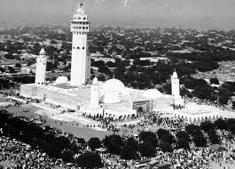
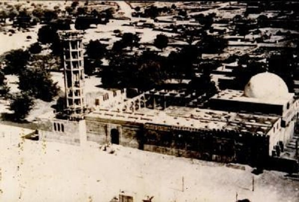

Prestention de la Grande Mosquée de Touba
 La fonction spirituelle et le rôle de ville pèlerinage de la CITE BÉNITE DE TOUBA, sont déterminés par l’emplacement sacré de ce Temple Majestueux de la GRANDE MOSQUÉE de TOUBA qui domine l’ensemble de la Ville sur une hauteur de 86,80 m. Ce Temple est localisé sur l’endroit où le Fondateur de la Ville, le Vénéré Cheikh Ahmadou Bamba, construisit en l’an 1306 H. (1888), sa première demeure. C’est le nombril de TOUBA, le Cheikh en avait lui-même déblayé l’emplacement et y prédisait déjà en 1306 H. (1888) la construction de la Grande Mosquée. Ce qui montre qu’Il avait en face de lui la Grande Mosquée majestueusement érigée. C’est là une vérité attestée du reste par les propos suivants : "l’Éternel ma honoré pour l’éternité d’un édifice indestructible qui se dressera jusqu’au Paradis" Cette Mosquée est le pôle de la Ville ; sa construction fut ordonnée par Cheikh Ahmadou Bamba lui-même et les travaux démarrèrent en 1932 sous l’égide de Serigne Mouhamadou Moustapha MBACKE, premier Khalife du Mouridisme. Cette mosquée de TOUBA constitue l’unique Grande Mosquée dont Serigne TOUBA avait recommandé la construction. Serigne Abdoul Ahad MBACKE troisième Khalif nous donne les éclaircissements suivants dans son sermon prononcé à l’occasion de la fête de Eidul Adhâ "Tabaski"de l’année 1975. "Il est parmi les clauses rattachées à la construction d’un édifice pour l’office du vendredi (une Grande Mosquée) que partout où délibérément on ne consent pas demeurer, de ne pas y dresser un édifice pour cette office-là. Mais simplement une mosquée pour les prières canoniques. C’est pourquoi le cheikh n’a jamais ordonné la construction d’un sanctuaire pour cette fonction si non à TOUBA exclusivement. D’ailleurs à la mosquée de Diourbel il n’a jamais accompli rien en dehors du rituel des cinq prières, personne ne la vue y célébrer la prière du vendredi." Le Khalife poursuit toujours "Et même la mosquée qu’on a érigé à Diourbel, ce sont les adeptes eux même qui, brodant sa parole la poussant au paroxysme l’ont élevée à cette dimension mais c’est une simple mosquée qu’il demandait qu’on lui dressât." Cette précision est d’une importance capitale car c’est à Diourbel même que le Cheikh ordonna la construction de la Grande Mosquée de TOUBA débutant lui-même, les premiers pas. (Demande d’autorisation auprès de l’Administration Coloniale, recommandation aux disciples, début de la collecte des sommes destinées à la construction...). Rappelons aussi que Diourbel constitue l’un des lieux où le Cheikh a longtemps vécu (de 1912 à 1927) soit 15 années de résidence surveillée. Il a aussi passé 5 ans au Djoloff en résidence surveillée entre 1907 et 1912, un exil en Mauritanie d’une durée de 5 ans (entre 1903 et 1907) et son séjour inoubliable au Gabon l’exil de 7 ans de 1895 à 1902. Partout dans ces lieux où il a résidé soit une période de plus de 30 années, il n’y a jamais recommandé la construction d’une grande mosquée. ce fait marquant confirme davantage la particularité de la Grande Mosquée de TOUBA et la singularité de son statut auprès du Cheikh. Cet édifice, lorsque Cheikh Ahmadou Bamba prédisait sa construction en 1306H. (1888) année de la fondation même de la ville de TOUBA, nul ne songeait qu’une bâtisse pourrait exister ou non mais c’est en ce moment même qu’il formulait des prières à l’endroit de ses futurs bâtisseurs dans son ode célèbre Matlabul Fawzayni "la quête du bonheur des deux mondes". "Absous les volontaires qui ont bâti l’Édifice si élevé de ma demeure, la Cité Bénite de TOUBA, de leurs pêchés du passé et de l’avenir ; absous tous ceux qui avaient la charge de l’ordonnance des travaux de l’Édifice, de leurs pêchés initiaux et finals". "Absous également tous ceux qui leur sont venus en aide dans cet Édifice qui, par Ta Gloire s’est érigé - ô combien majestueux - de leurs pêchés premiers et derniers". Serigne Fallilou MBACKE deuxième Khalife nous fournit cette révélation de taille sur le statut de la Grande Mosquée dans un de ces entretiens : "le CHEIKH dit que lorsque son Seigneur lui octroya cette Grande Mosquée, c’est au moment de son exil en mer (Gabon). Cette nuit même ,les anges s’adressèrent à lui en ces termes : nous voulons que tu nous confies l’édification de cette Grande mosquée ; nous la construirons en or ou en argent selon ta préférence et partout où tu nous demanderas de l’édifier nous le ferons. La réponse du CHEIKH fut la suivante j’ai des disciples et je voudrais qu’ils profitent des grâces liées à sa construction. Lorsque les anges s’en allèrent, les djinns se présentèrent à lui et lui tinrent le même langage , mais sa réponse demeura inchangée. Ensuite il fait la déclaration suivante : "celui qui y oeuvre le plus ira toujours de l’avant et aura plus de titres de prééminence. Celui qui se fait re marquer par sa négligence sera toujours parmi les derniers" SERIGNE TOUBA au moment où l’ordonnait l’édification de la Grande Mosquée de TOUBA, avait fait savoir simultanément que : "Si vous l’entreprenez, DIEU en sera pour autant glorifié, et en cas de renonciation, DIEU enverrait des êtres pour s’en acquitter car c’est une oeuvre déjà agrée par DIEU". Poursuivant toujours il avait ajouté : Quiconque se distinguera dans les travaux se distinguera ici bas et dans l’au-delà. Serigne Mouhamadou Lamine DIOP un grand disciple de Cheikh Ahmadou Bamba et auteur d’un important traité sur l’historique de la Grande Mosquée de TOUBA nous rapporte les propos suivants : "Serigne Mouhammadou Moustapha MBACKE ma confié qu’un jour (de l’an 1340H./1921) Serigne TOUBA l’avait appelé à un entretien dont nul autre que DIEU n’était le témoin et lui avait dit : "Mon fils ! tâche désormais d’orienter tous tes objectifs et toutes tes préoccupations vers cette mosquée que je te charge d’édifier. toute peine qui en découlera supporte la ! consacres-y tous tes efforts à partir de ce jour ne cherches plus a me consulter là dessus." D’autres révélations nous sont rapportées par ce témoin privilégié toujours dans son historique sur l’édification de la Grande Mosquée de Touba. Serigne Mouhamadou Lamine DIOP nous confie "J’ai recueilli auprès de Serigne Mouhammadou Moustapha MBACKE et de Serigne Massamba MBACKE que Serigne TOUBA leur avait une fois révélé en présence de Serigne Ibra Faty et de Serigne MBACKE BOUSSO ce qui suit : Mon service dans ce monde reposait sur huit choses exactement et je me suis déjà acquitté des sept à savoir : – la mention du nom de DIEU – le coran qui est la Parole de DIEU – le prophète Mouhammad l’Envoyé de DIEU – l’ensemble des prophètes et envoyés formant la Faction de DIEU – les gens de Badr constituant l’Armée Céleste de DIEU – les compagnons, les Saints et les érudits qui mettent en pratique leur sciences formant ensemble le groupe des vertueux – Et l’Islam la religion reconnue auprès de DIEU Quant au huitième c’est la Kaaba temple de DIEU et ce que DIEU a décrété à ce propos est qu’elle soit une mosquée que l’on édifiera à TOUBA. L’auteur poursuit toujours : "Serigne MBACKE DIOUF m’a confié qu’un jour Serigne TOUBA lui avait dit" Lorsque DIEU ma donné l’ordre de construire une mosquée à TOUBA et qu j’eus à mon tour recommandé aux adeptes de l’entreprendre les journalistes (de mon époque) ont été unanimes à vouloir contrecarrer cette entreprise, mais ce furent mes écrits (panégyriques) qui se sont dressés contre eux et ont réglé leur sort Enfin une révélation de taille que nous fournit l’auteur : "Il était très fréquent d’entendre SERIGNE TOUBA énumérer les dignitaires, les érudits, les rois et leurs conseillers en disant que quiconque parmi eux dont le rang flatte au point qu’il veuille s’opposer à l’édification de cette mosquée il perdra inévitablement son éminence soit il mourra ou bien il sera déchu et plus jamais il ne se réhabilitera ; car cette mosquée est une oeuvre que DIEU et son Prophète ont agrée et recommandée, j’ai alors chargé à mes disciples de l’accomplir et il l’ont reçu avec agrément
La Grande Mosquée de Touba : Chronique sur la construction

"L’ETERNEL M’A HONORE POUR L’ÉTERNITÉ D’UN ÉDIFICE INDESTRUCTIBLE QUI SE DRESSERA JUSQU’AU PARADIS " (CHEIKHOUL KHADIM dixit)
1344.H (1925) soit deux années avant son rappel à DIEU, le Fondateur du Mouridisme CHEIKH AHMADOU BAMBA de son vrai nom Mouhamed ben Mouhamed ben Habib Allah plus connu sous le nom de KHADIMOU RASSOUL ordonna la construction de l’édifice . Il donna lui même les repères qui jouxteront son sépulcre. Jamais un objectif ne mobilisera autant de monde pour sa réalisation ; il s’agit de ses disciples qui rivalisèrent d’ardeur dans la recherche de l’agrément de DIEU.
1347.H (1929) le premier Khalife du Mouridisme Serigne Mouhammadou Moustapha MBACKE (1927-1945) fils aîné du fondateur assura la liaison ferroviaire Diourbel - TOUBA avec les fonds propres de la communauté qui a fourni le personnel bénévole nécessaire pour le génie civil. C’est dire que la ligne ferroviaire avait son terminus à Diourbel et il fallait, pour atteindre TOUBA, la raccorder sur une distance de 50 km.
L’Administration Coloniale lui laissa cette lourde tâche croyant que seule une compagnie ou un gouvernement pouvait s’en acquitter. Il brava cet obstacle pour l’acheminement des matériaux lourds tout corps de métiers confondus, condition sine qua non pour qu’il y’ait édifice.
Vendredi 12 Shawwâl 1350.H (1932) on procéda solennellement d’abord à la reconnaissance du terrain, à sa remise en état, en somme à des tâches confirmant les préliminaires à tout démarrage.
Vendredi 26 Shawwâl 1350.H (1932) phase ultime et historique de fondation. Le traçage fut opéré selon les normes du plan architectural et de béton armé. Les tranchées furent démarrées mais elles prirent du temps à cause de leur importance malgré l’effectif considérable des travailleurs.
Vendredi 17 Dhûlquacda 1350.H (1932) la pose de la première pierre qui réunit beaucoup de dignitaires mourides se déroula sous l’égide du vénéré Serigne Mouhamadou Moustapha MBACKE et une affluence de disciples qui débordait leur cadre d’accueil.
De 1932 à 1945 Notre brave premier Khalife s’y investit jusqu’à la dernière goutte de son énergie, releva tous les défis de la crise des années de guerre au point que si ce n’était pas à cause des contraintes de la guerre 1939-1945 il l’aurait à coup sûr achevée ; mais DIEU a voulu qu’il boucla les fondations et éleva les mûrs à la hauteur d’une terrasse. Que DIEU soit satisfait de lui de même que l’ÉLU et son père et maître spirituel KHADIMOU RASSOUL.
A partir de 1945 , soit 18 années après le rappel à DIEU de CHEIKH AHMADOU BAMBA, Serigne Falilou MBACKE deuxième khalife (1945-1968) prit le relais et hissa le flambeau selon les vertus de son prédécesseur.
Il fit preuve d’abnégation, de patience et de toutes les motivations à observer la recommandation de son père. Il ne ménagera aucun effort quel qu’il soit et quel qu’en soit le prix, la mosquée s’acheva et fut inaugurée le
Vendredi 07 Juin 1963 devant des milliers de fidèles venus de tous les coins du Sénégal et du monde entier dans le but de rendre hommage à ce sanctuaire majestueux érigé en l’honneur exclusif de DIEU.
Cette mosquée est un édifice qui surplombe la ville sainte de TOUBA sur une hauteur de plus de 86m des minarets au nombres cinq (5) et un décor de coupoles et de dômes qui inspire une présence divine exaltante.
Après 1968 date à laquelle Serigne Falilou MBACKE fut rappelé à DIEU, Serigne Abdoul Ahad MBACKE 3éme khalife du Mouridisme (1968-1989) n’a cessé de faire des aménagements au sein de la Grande Mosquée.
Parmi ces réalisations on peut retenir entre autres le mur de clôture et la Grille de la Grande Mosquée, les décorations à l’intérieur, les bacs à ablution, le revêtement en marbre, l’or qui orne le sépulcre du CHEIKH, les lustres etc.
Une des réalisations les plus importantes est sans doute la première phase d’extension de la Grande Mosquée pour une capacité de 1200 places Cette extension effectuée sur le côté droit (Nord), sur le côté gauche (Sud) et sur le côté Ouest a vu les mêmes colonnes que celles de la MOSQUÉE aménagées, avec la décoration du plafond dans sa partie supérieure des dômes à vue interne et à voûte extérieure absente, un dispositif de ventilation, de sonorisation et d’éclairage, en somme, un ensemble en parfaite harmonie avec la MOSQUÉE dans tous ses aspect.
la cérémonie de pose de la première pierre de ces travaux d’extension d’un montant de 1 milliard 500 millions de Francs CFA eut lieu le mercredi 17 Rajab 1407H. soit le 18 mars 1987.
Cette première phase fut suivie d’une deuxième lancée par Serigne Abdoul Ahad MBACKE le 08 Décembre 1988 27/28 Jumâda I 1409.H) pour un coût de 1 milliard de francs CFA portant sur les travaux de rénovation d’une partie de la Mosquée comprenant le Sépulcre ,le Minbar, L’aréostyle du Saint- coran et la face Est.
Rappelé à DIEU en 1989 c’est Serigne Abdou Khadre MBACKE quatrième khalife de 1989 à 1990 qui fut également Imam de la Grande mosquée pendant 22 ans qui sauvegarda le projet jusqu’a 1990 date de son rappel à DIEU.
A partir de 1990 c’est Serigne Saliou MBACKE actuel khalife qui poursuivit ces travaux en chantier jusqu’a leur achèvement. Ainsi le revêtement solennel en tapis de la première extension eut lieu le 1er du mois lunaire de Rajab 1413H. (décembre 1992).
La deuxième Phase d’extension des travaux débuta également sous son égide le 27 du mois de RAJAB 1413H. (janvier 1993).Ils concernent l’embellissement de la Grande Mosquée , les décorations à l’intérieur, et les travaux du Sépulcre du Cheikh, la Sainte demeure même du Cheikh Ahmadou Bamba.
Ces travaux menés d’arrache -pied par Serigne Saliou MBACKE durèrent de 1993 à l’an 2000.
La Mosquée est le nombril de la cité bénite de TOUBA. Elle est le pôle vers lequel tout converge. C’est le symbole de statut de ville religieuse et de ville pèlerinage, unique en Afrique de l’Ouest elle a terminé actuellement le revêtement extérieur de ses murs avec du marbre pour une enveloppe d’un milliard cinq million de francs dégagée par la communauté Mouride.